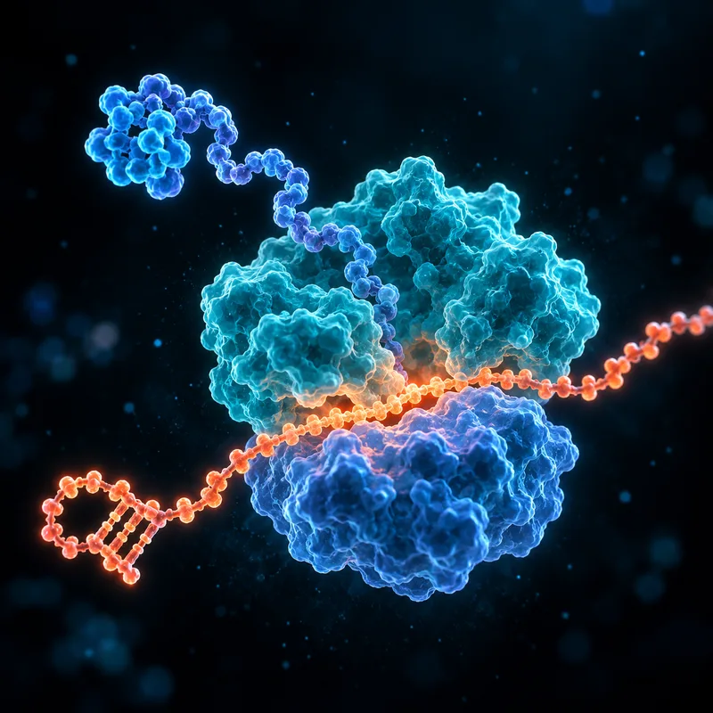
mRNA medicines and vaccines
Reads the signals that decide where an mRNA goes in the cell, how it is processed, and whether it codes for protein.
#1 mRNA localisation · coding potential · polyadenylation
RNA foundation models
RiboLoop is a family of foundation models that has learned the language of RNA from more than 47 million natural sequences. It is the understanding layer for the next generation of RNA medicines.
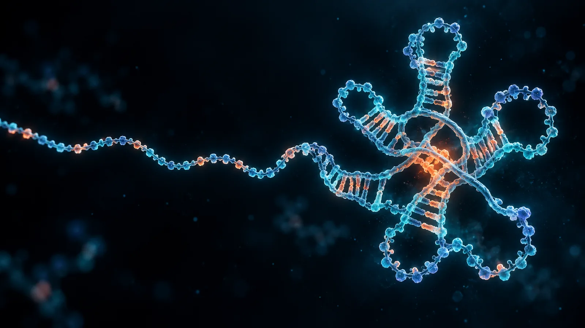
The idea
mRNA vaccines, gene-silencing drugs and RNA-targeting small molecules all depend on one thing: knowing how a string of A, C, G and U will fold, function and fail inside a cell.
The space of possibilities is enormous. A 50-letter RNA already has more possible sequences than there are stars in the observable universe. Labs can test thousands. Design needs a model that already understands.
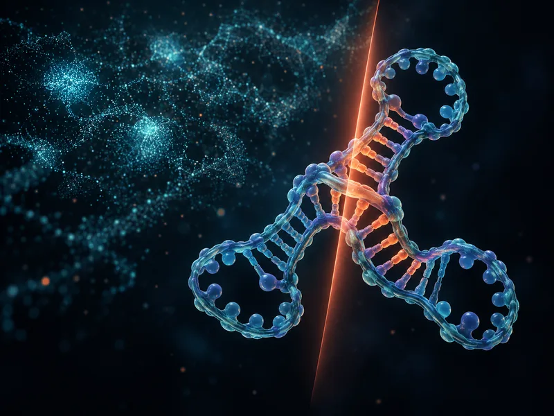
We hide letters in millions of natural RNAs and train RiboLoop to restore them. To succeed, it has to learn which letters pair, what shapes they form, and which changes nature never tolerates. Nobody labels any of it.
restored by RiboLoop
Instead of stacking hundreds of different layers, RiboLoop re-reads each sequence with a single compact block. It reaches the understanding of models many times its size while staying small, fast and inexpensive to run.
Benchmarks
Public benchmarks, run against the leading RNA foundation models. RiboLoop models are shown in coral.
Mutation-effect score against parameters (log scale). Top-left is best: accurate and small.
Mutation-effect score against RNAs read per second (log scale). Top-right is best: accurate and fast.
Evaluation data as of October 2026.
A real molecule
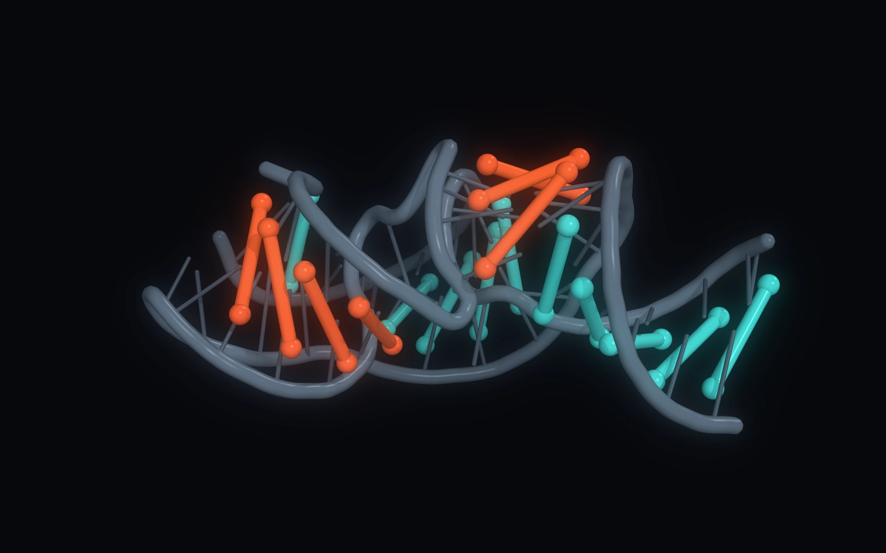
17/19
base pairs of the twister ribozyme recovered from its sequence alone, including all 7 pseudoknot pairs, the hardest kind to predict. RiboLoop never saw this structure.
Shown on the experimentally solved crystal structure (PDB 4OJI). Model: RiboLoop-33M, zero-shot.
The natural ribozyme
A self-cutting RNA. In the lab it is highly active.
measured activity
One letter changed
RiboLoop ranks this change the 2nd most damaging of all 162 possible single-letter changes. Its predicted activity falls from 0.97 to 0.17.
measured activity
The suggested fix
After the change, RiboLoop expects the partner letter to flip from G to C (probability 0.00001 → 0.71), restoring the pair. That double change brings activity back in the lab.
measured activity
Laboratory measurements: Kobori & Yokobayashi, Angew. Chem. Int. Ed. 2016. Predicted activity is a calibration of the zero-shot score fitted on the other 143 measured single changes.
Applications
With a small amount of task data, the same model leads on problems that matter for RNA medicine.

Reads the signals that decide where an mRNA goes in the cell, how it is processed, and whether it codes for protein.
#1 mRNA localisation · coding potential · polyadenylation
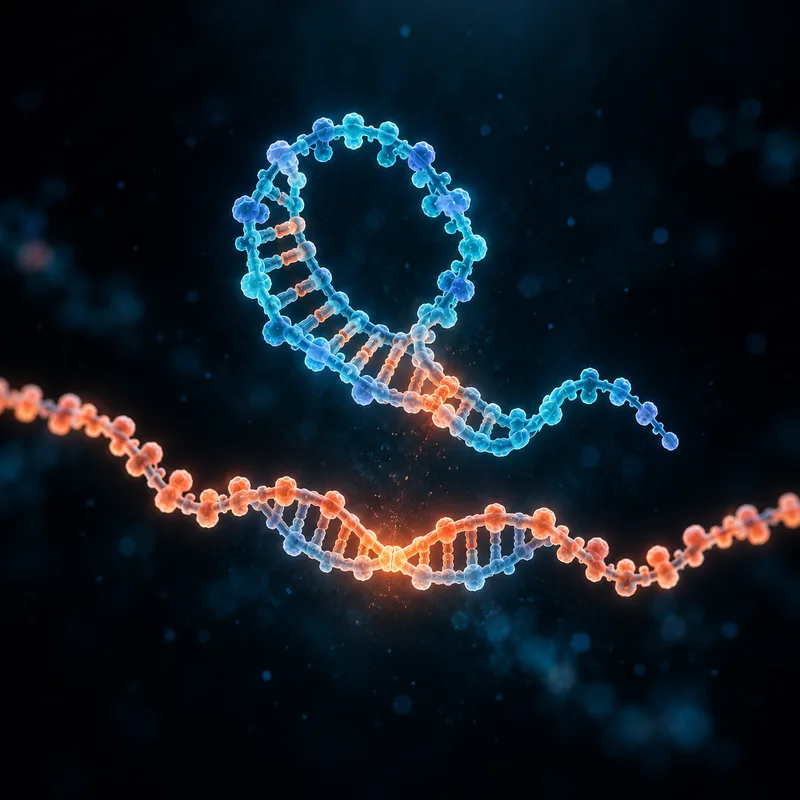
Predicts how cells cut and join RNA, the mechanism behind approved drugs for spinal muscular atrophy.
#1 splice sites · splicing events
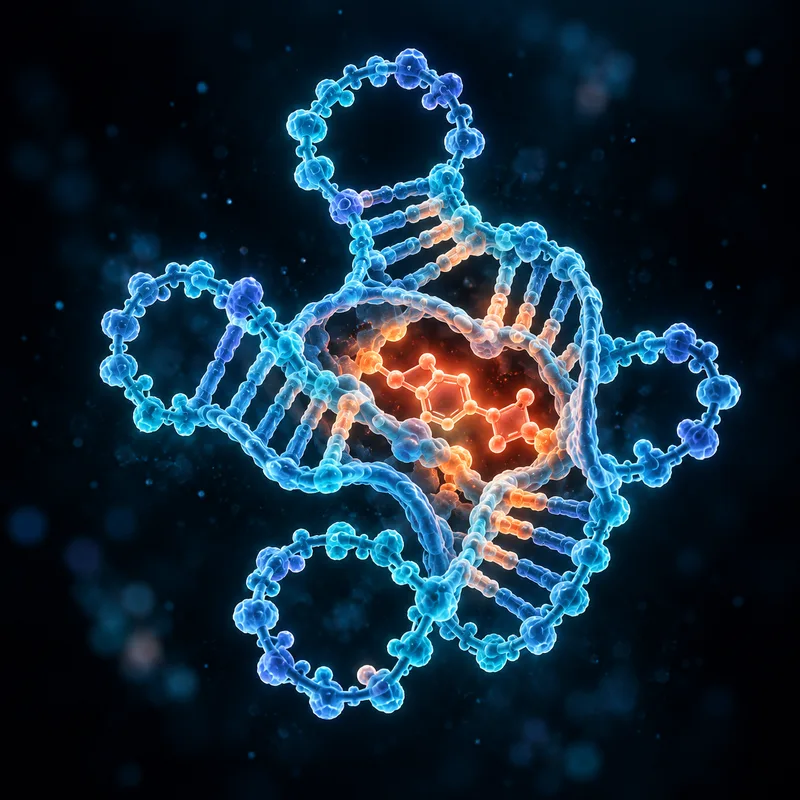
Maps how an RNA folds, revealing the pockets where small-molecule drugs can bind.
#1 secondary structure · 3D contacts
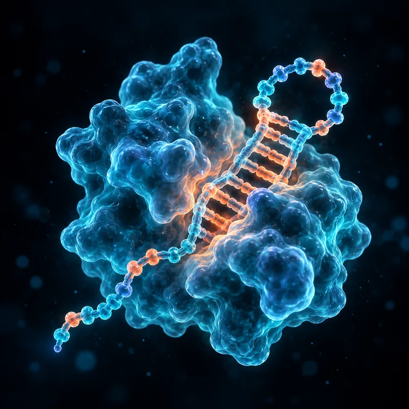
Predicts which proteins latch onto an RNA, a key control point for RNA stability and many diseases.
#1 protein binding across 22 RNA-binding proteins
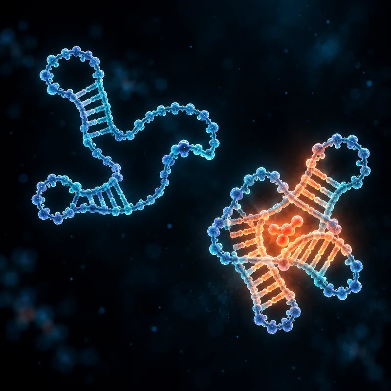
Scores every possible mutation before anyone makes it, so labs only build the designs most likely to work.
#1 zero-shot mutation effect (RNAGym)
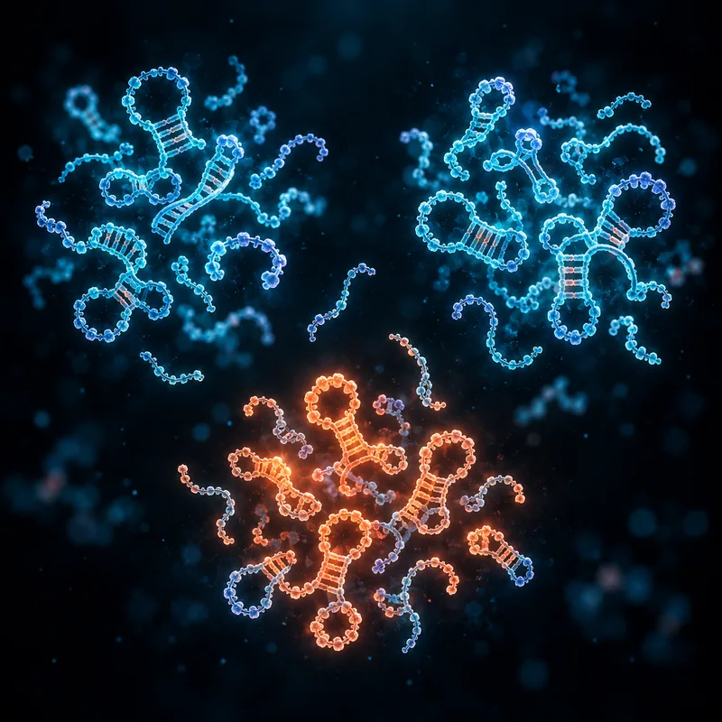
Recognises what an unknown RNA is and where in the cell it belongs, from sequence alone.
#1 RNA type · miRNA localisation
Roadmap
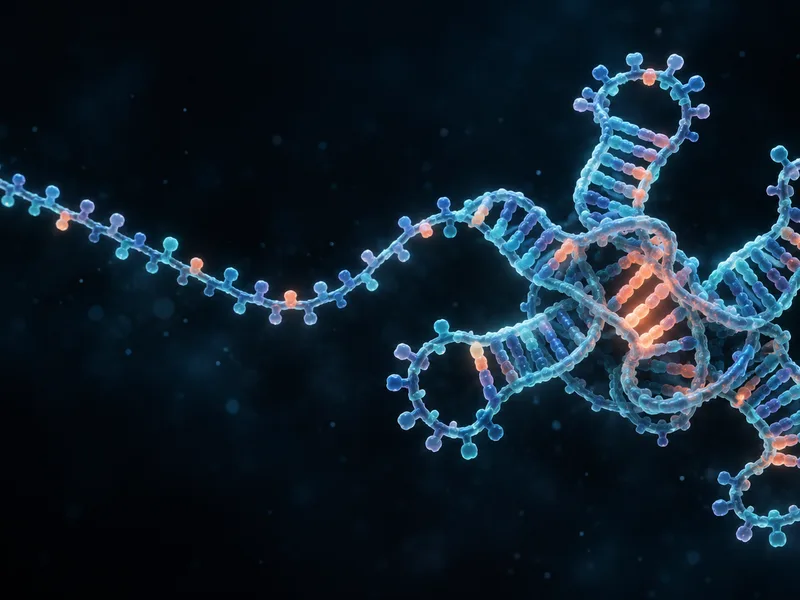
01 Now Built
A family of RiboLoop foundation models, from 10 million to 160 million parameters, trained on more than 47 million natural RNAs. Leading results on mutation effect, structure and all 8 biology task families.
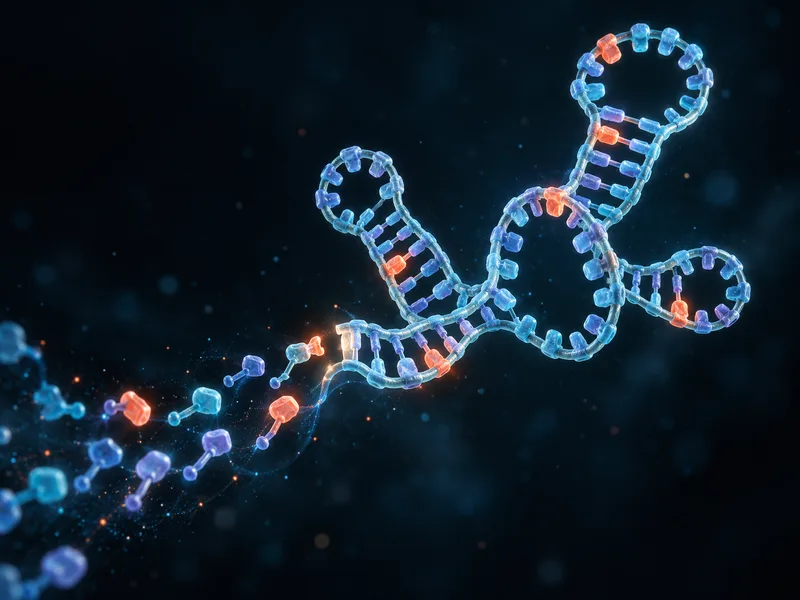
02 Next In development
Generate new RNAs with a chosen function from scratch, and improve existing ones: more stable, better expressed, tighter binding. The model's understanding becomes the engine that scores and steers every design.
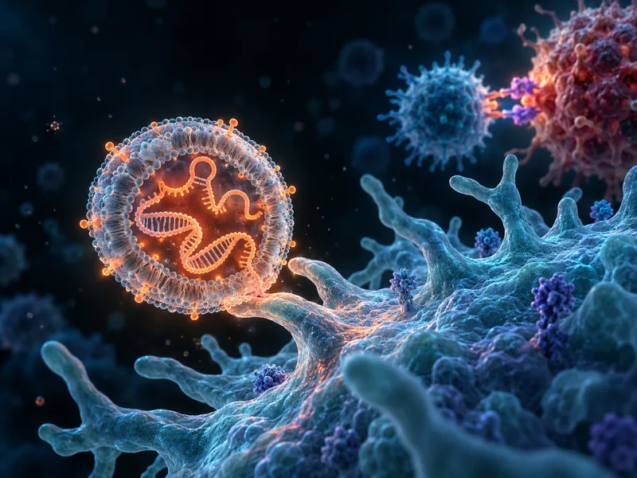
03 Long term Vision
From the mutations in a patient's tumour to a personalised mRNA vaccine: choose the right targets, then design an mRNA that is stable, highly expressed and safe.
The model family
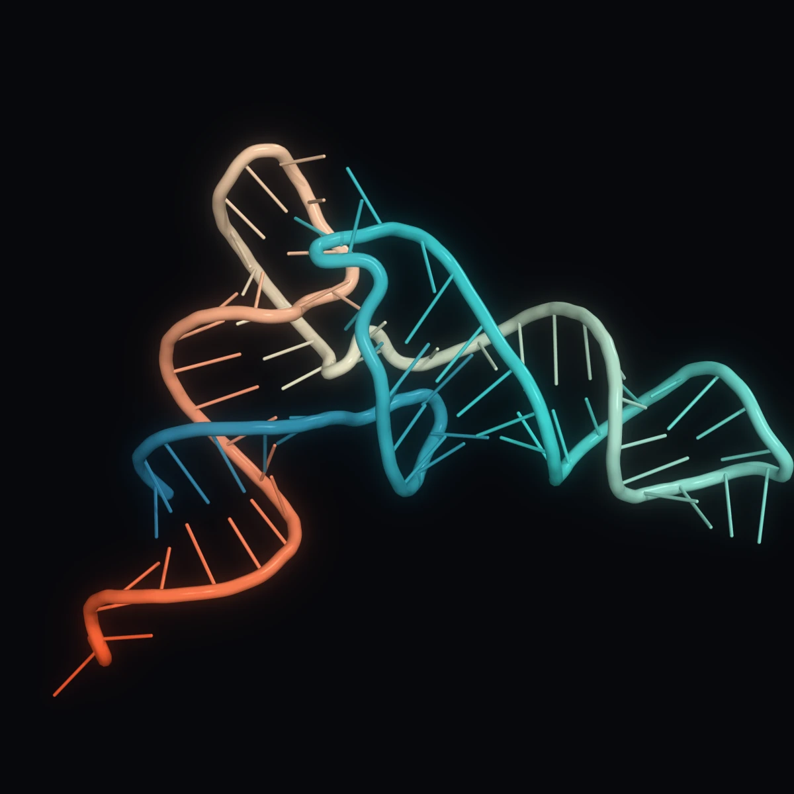
10M
The fastest model we tested: 2.8× the speed of RNA-FM at a tenth of its size.
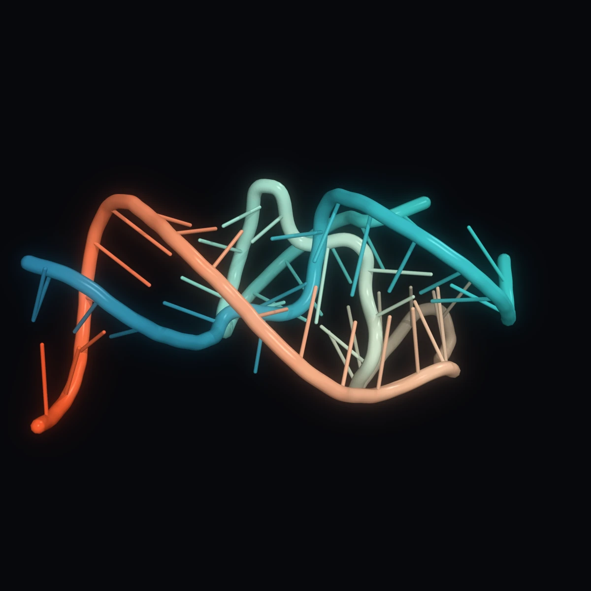
33M
The top zero-shot mutation-effect score, at 48× fewer parameters than the strongest competitor.
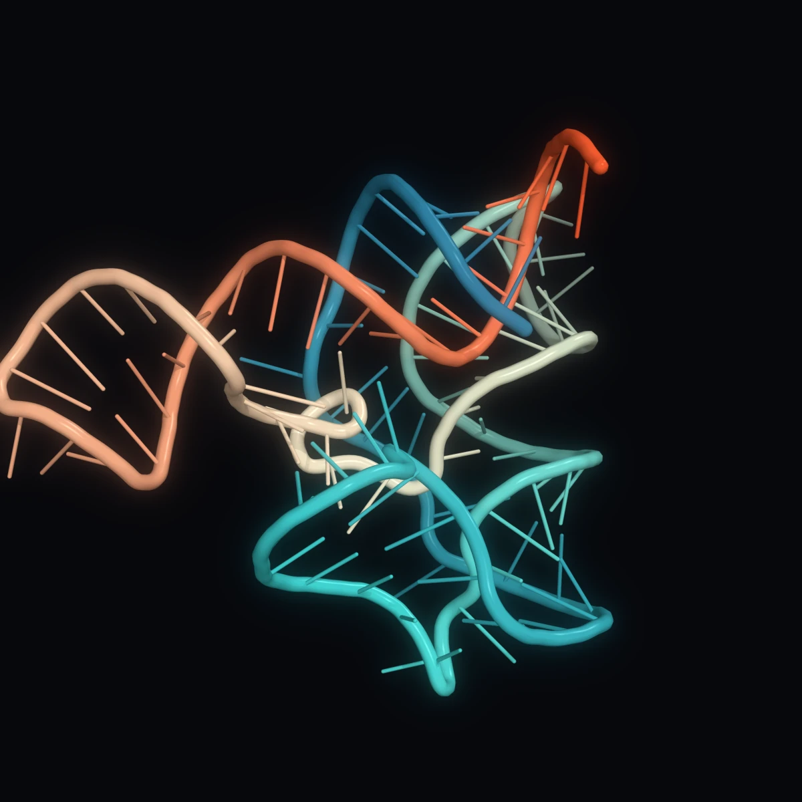
100M
Leads secondary-structure prediction and the biology task suite.
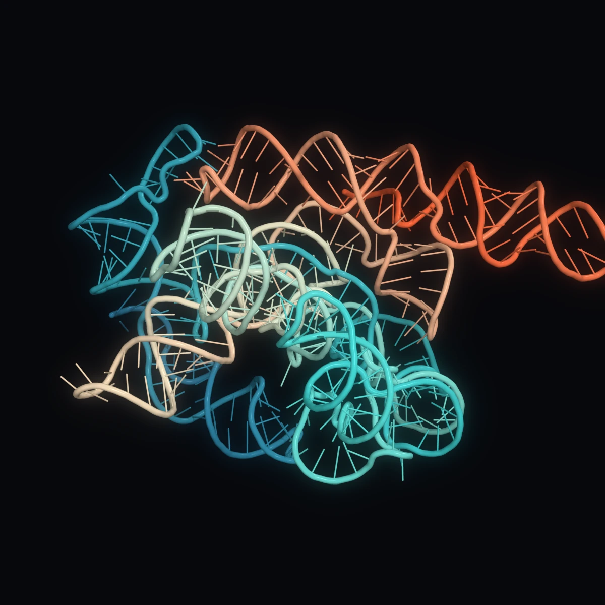
160M
Our largest model so far, and the starting point for the design stage.
Tiles show real RNA structures from the Protein Data Bank (1EHZ, 4OJI, 2GIS, 7EZ0), coloured from start to end of the chain.
We are speaking with partners and investors. Ask us for the technical brief.
pai.interp@gmail.com